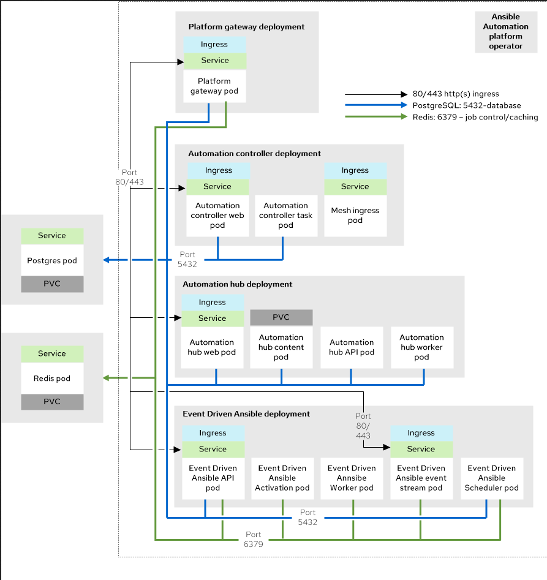
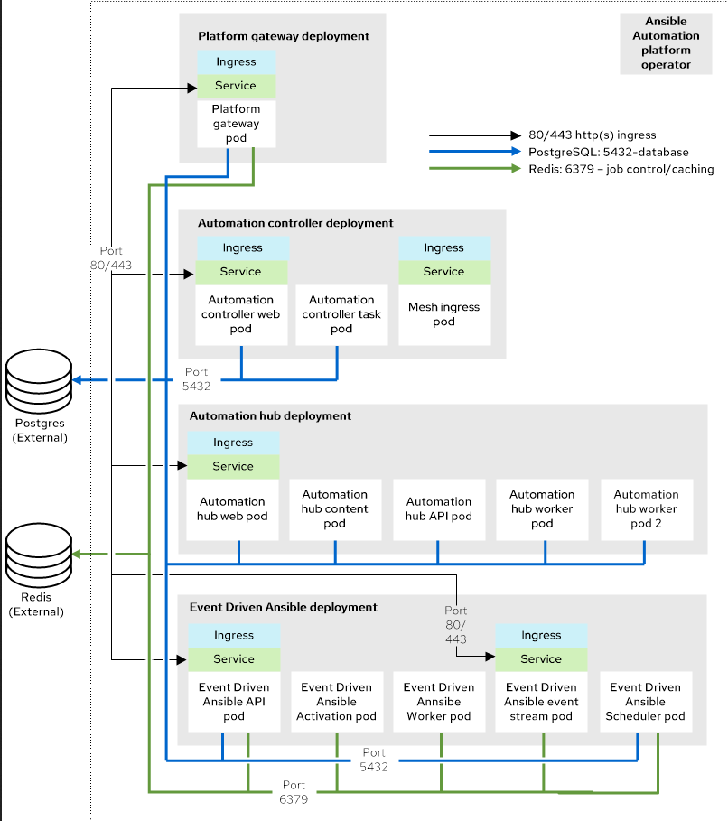

Operator Installation
The Ansible Automation Platform Operator provides cloud-native, push-button deployment of new Ansible Automation Platform instances in your OpenShift environment. The Ansible Automation Platform Operator includes resource types to deploy and manage instances of automation controller and private automation hub. It also includes automation controller job resources for defining and launching jobs inside your automation controller deployments.
Note: You can deploy multiple isolated instances of Ansible Automation Platform into the same Red Hat OpenShift Container Platform cluster by using a namespace-scoped deployment model. This approach allows you to use the same cluster for several deployments.
There are two deployment Topologies in this:
-
Operator growth Topology: The growth topology is intended for organizations that are getting started with Ansible Automation Platform and do not require redundancy or higher computing for large volumes of automation. This topology allows for smaller footprint deployments.
A Single Node OpenShift (SNO) cluster has been tested with the following requirements: 32 GB RAM, 16 CPUs, 128 GB local disk, and 3000 IOPS.
The benefits of using this topology are:
-
Limited redundancy.
-
Lower upfront resource requirements (fewer nodes, shared components).
-
-
Operator enterprise Topology: The enterprise topology is intended for organizations that require Ansible Automation Platform to be deployed with redundancy or higher computing for large volumes of automation.

The above infrastructure topology describes an OpenShift Cluster with 3 primary nodes and 2 worker nodes where each OpenShift Worker node has been tested with the following component requirements: 16 GB RAM, 4 CPUs, 128 GB local disk, and 3000 IOPS.
The benefits of using this topology method:
-
Designed for large-scale operations with High availability and fault tolerance.
-
Optimized for enterprise environments with strict SLAs.
-
Multiple instances for each component: Automation Hub, Controller, etc.